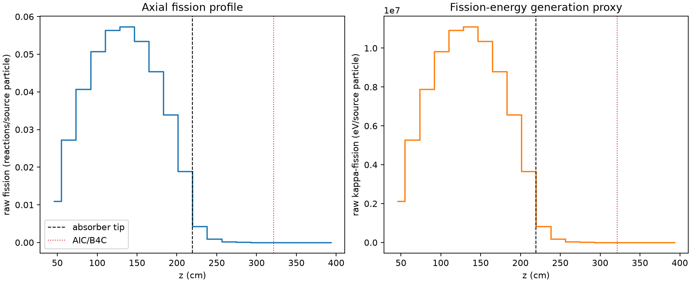
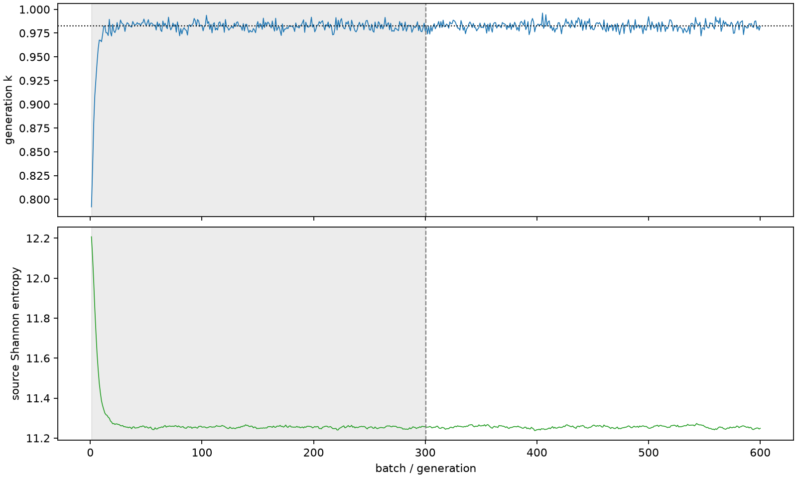

| field | value |
|---|---|
| experiment | V2-STAGE_32_OGRENCI_03-0002 |
| k | 0.9823172159198675 |
| MC standard error | 0.0001709747771284926 |
| seconds | 1055.5766537179989 |
| acceptance | not_assessed |
| convergence | review_required |
Completed is output integrity only; physical and statistical review required. Zero tallies do not prove zero production or zero uncertainty.
| diagnostic | value |
|---|---|
| geometric fuel voxels | 5280 |
| zero fission tally voxels | 673 |
| low signal fuel voxels | 1642 |
| low signal fission share | 6.842541419992671e-05 |
| low signal kappa share | 6.845780599544232e-05 |
| important fission share | 0.9500338105257933 |
| previous filter included | 3638 |
| duration estimate s | 1562.5173488400023 |
| actual minus estimate s | -506.9406951220035 |
| fission relative MC error | statistics |
|---|---|
| all_geometric_fuel | {"voxels": 5280, "positive_mean_voxels": 4607, "zero_mean_voxels": 673, "undefined_relative_error_voxels": 673, "median": 0.010895557973596752, "p95": 0.9881526226131777, "maximum": 1.0000000000000002} |
| low_signal | {"voxels": 1642, "positive_mean_voxels": 969, "zero_mean_voxels": 673, "undefined_relative_error_voxels": 673, "median": 0.6129418312789336, "p95": 1.0, "maximum": 1.0000000000000002} |
| important_95pct | {"voxels": 2325, "positive_mean_voxels": 2325, "zero_mean_voxels": 0, "undefined_relative_error_voxels": 0, "median": 0.006780365925124894, "p95": 0.010341959140631015, "maximum": 0.013218932005447052} |
| outside_previous_filter | {"voxels": 1642, "positive_mean_voxels": 969, "zero_mean_voxels": 673, "undefined_relative_error_voxels": 673, "median": 0.6129418312789336, "p95": 1.0, "maximum": 1.0000000000000002} |
| kappa_fission relative MC error | statistics |
|---|---|
| all_geometric_fuel | {"voxels": 5280, "positive_mean_voxels": 4607, "zero_mean_voxels": 673, "undefined_relative_error_voxels": 673, "median": 0.010882290258485614, "p95": 0.9880729313850016, "maximum": 1.0000000000000002} |
| low_signal | {"voxels": 1642, "positive_mean_voxels": 969, "zero_mean_voxels": 673, "undefined_relative_error_voxels": 673, "median": 0.611424637228034, "p95": 1.0, "maximum": 1.0000000000000002} |
| important_95pct | {"voxels": 2325, "positive_mean_voxels": 2325, "zero_mean_voxels": 0, "undefined_relative_error_voxels": 0, "median": 0.006771157633139803, "p95": 0.010327672041804374, "maximum": 0.013202861814471965} |
| outside_previous_filter | {"voxels": 1642, "positive_mean_voxels": 969, "zero_mean_voxels": 673, "undefined_relative_error_voxels": 673, "median": 0.611424637228034, "p95": 1.0, "maximum": 1.0000000000000002} |
| axial bin | fission share | kappa-fission share |
|---|---|---|
| 1 | 0.02735936259698032 | 0.027360873618496404 |
| 2 | 0.06789628596228611 | 0.06789585441786673 |
| 3 | 0.10173771781243628 | 0.10173703830366303 |
| 4 | 0.1266924135238232 | 0.12669136116795116 |
| 5 | 0.1408423914733107 | 0.14084104072832224 |
| 6 | 0.14297987164233553 | 0.14297856137635662 |
| 7 | 0.1333750400303297 | 0.13337390554900783 |
| 8 | 0.11349929544504878 | 0.11349835372793515 |
| 9 | 0.08457075667229612 | 0.08456998357396985 |
| 10 | 0.04726242010765737 | 0.04726260863914825 |
| 11 | 0.010678303448725893 | 0.010682748282016593 |
| 12 | 0.0023769279259323027 | 0.002378099287973732 |
| 13 | 0.0005624479677804468 | 0.0005627139144413901 |
| 14 | 0.00012650125729170563 | 0.00012657492223710573 |
| 15 | 2.9669146509389442e-05 | 2.9687049489858916e-05 |
| 16 | 9.109541340767537e-06 | 9.108519476541996e-06 |
| 17 | 1.1561167388535479e-06 | 1.1564078380270452e-06 |
| 18 | 3.764403164046561e-08 | 3.7969161838684725e-08 |
| 19 | 2.9098443356789384e-07 | 2.9184495695976687e-07 |
| 20 | 7.007111169375106e-10 | 6.99690717723767e-10 |
Histories include the inactive-to-active transition at batch 300. kappa-fission approximates fission energy production, not total heat deposition.

